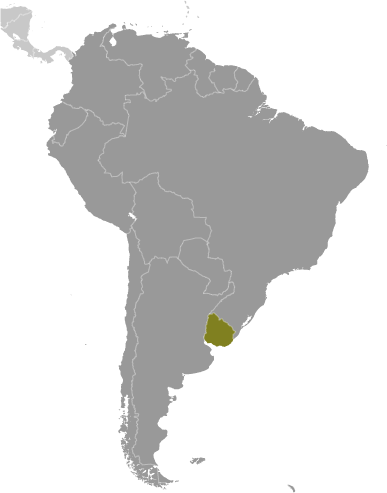
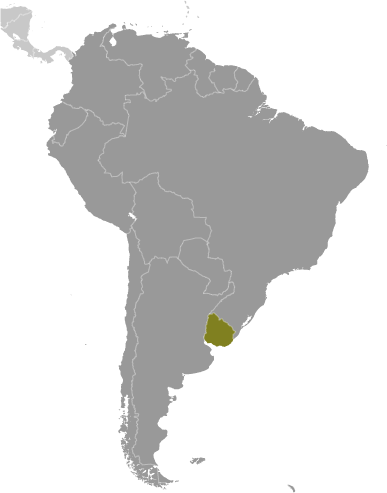

South America :: URUGUAY
Introduction :: URUGUAY
-
Montevideo, founded by the Spanish in 1726 as a military stronghold, soon took advantage of its natural harbor to become an important commercial center. Claimed by Argentina but annexed by Brazil in 1821, Uruguay declared its independence four years later and secured its freedom in 1828 after a three-year struggle. The administrations of President Jose BATLLE in the early 20th century launched widespread political, social, and economic reforms that established a statist tradition. A violent Marxist urban guerrilla movement named the Tupamaros, launched in the late 1960s, led Uruguay's president to cede control of the government to the military in 1973. By yearend, the rebels had been crushed, but the military continued to expand its hold over the government. Civilian rule was restored in 1985. In 2004, the left-of-center Frente Amplio Coalition won national elections that effectively ended 170 years of political control previously held by the Colorado and National (Blanco) parties. Uruguay's political and labor conditions are among the freest on the continent.
Geography :: URUGUAY
-
Southern South America, bordering the South Atlantic Ocean, between Argentina and Brazil33 00 S, 56 00 WSouth Americatotal: 176,215 sq kmland: 175,015 sq kmwater: 1,200 sq kmcountry comparison to the world: 92about the size of Virginia and West Virginia combined; slightly smaller than the state of Washingtontotal: 1,591 kmborder countries (2): Argentina 541 km, Brazil 1,050 km660 kmterritorial sea: 12 nmcontiguous zone: 24 nmexclusive economic zone: 200 nmcontinental shelf: 200 nm or the edge of continental marginwarm temperate; freezing temperatures almost unknownmostly rolling plains and low hills; fertile coastal lowlandmean elevation: 109 melevation extremes: lowest point: Atlantic Ocean 0 mhighest point: Cerro Catedral 514 marable land, hydropower, minor minerals, fishagricultural land: 87.2%arable land 10.1%; permanent crops 0.2%; permanent pasture 76.9%forest: 10.2%other: 2.6% (2011 est.)2,380 sq km (2012)most of the country's population resides in the southern half of the country; approximately 80% of the populace is urban, living in towns or cities; nearly half of the population lives in and around the capital of Montevideoseasonally high winds (the pampero is a chilly and occasional violent wind that blows north from the Argentine pampas), droughts, floods; because of the absence of mountains, which act as weather barriers, all locations are particularly vulnerable to rapid changes from weather frontswater pollution from meat packing/tannery industry; inadequate solid/hazardous waste disposalparty to: Antarctic-Environmental Protocol, Antarctic-Marine Living Resources, Antarctic Treaty, Biodiversity, Climate Change, Climate Change-Kyoto Protocol, Desertification, Endangered Species, Environmental Modification, Hazardous Wastes, Law of the Sea, Ozone Layer Protection, Ship Pollution, Wetlandssigned, but not ratified: Marine Dumping, Marine Life Conservationsecond-smallest South American country (after Suriname); most of the low-lying landscape (three-quarters of the country) is grassland, ideal for cattle and sheep raising
People and Society :: URUGUAY
-
3,360,148 (July 2017 est.)country comparison to the world: 133noun: Uruguayan(s)adjective: Uruguayanwhite 88%, mestizo 8%, black 4%, Amerindian (practically nonexistent)Spanish (official), Portunol, Brazilero (Portuguese-Spanish mix on the Brazilian frontier)Roman Catholic 47.1%, non-Catholic Christians 11.1%, nondenominational 23.2%, Jewish 0.3%, atheist or agnostic 17.2%, other 1.1% (2006 est.)Uruguay rates high for most development indicators and is known for its secularism, liberal social laws, and well-developed social security, health, and educational systems. It is one of the few countries in Latin America and the Caribbean where the entire population has access to clean water. Uruguay's provision of free primary through university education has contributed to the country's high levels of literacy and educational attainment. However, the emigration of human capital has diminished the state's return on its investment in education. Remittances from the roughly 18% of Uruguayans abroad amount to less than 1 percent of national GDP. The emigration of young adults and a low birth rate are causing Uruguay's population to age rapidly.In the 1960s, Uruguayans for the first time emigrated en masse - primarily to Argentina and Brazil - because of economic decline and the onset of more than a decade of military dictatorship. Economic crises in the early 1980s and 2002 also triggered waves of emigration, but since 2002 more than 70% of Uruguayan emigrants have selected the US and Spain as destinations because of better job prospects. Uruguay had a tiny population upon its independence in 1828 and welcomed thousands of predominantly Italian and Spanish immigrants, but the country has not experienced large influxes of new arrivals since the aftermath of World War II. More recent immigrants include Peruvians and Arabs.0-14 years: 20.17% (male 344,810/female 332,791)15-24 years: 15.69% (male 267,000/female 260,135)25-54 years: 39.34% (male 654,036/female 667,780)55-64 years: 10.56% (male 167,002/female 187,865)65 years and over: 14.25% (male 191,597/female 287,132) (2017 est.)total dependency ratio: 55.9youth dependency ratio: 33.4elderly dependency ratio: 22.5potential support ratio: 4.4 (2015 est.)total: 35 yearsmale: 33.1 yearsfemale: 36.7 years (2017 est.)country comparison to the world: 780.27% (2017 est.)country comparison to the world: 16713 births/1,000 population (2017 est.)country comparison to the world: 1529.4 deaths/1,000 population (2017 est.)country comparison to the world: 56-0.9 migrant(s)/1,000 population (2017 est.)country comparison to the world: 135most of the country's population resides in the southern half of the country; approximately 80% of the populace is urban, living in towns or cities; nearly half of the population lives in and around the capital of Montevideourban population: 95.6% of total population (2017)rate of urbanization: 0.44% annual rate of change (2015-20 est.)MONTEVIDEO (capital) 1.707 million (2015)at birth: 1.04 male(s)/female0-14 years: 1.04 male(s)/female15-24 years: 1.03 male(s)/female25-54 years: 0.98 male(s)/female55-64 years: 0.89 male(s)/female65 years and over: 0.66 male(s)/femaletotal population: 0.94 male(s)/female (2016 est.)15 deaths/100,000 live births (2015 est.)country comparison to the world: 136total: 8.3 deaths/1,000 live birthsmale: 9.3 deaths/1,000 live birthsfemale: 7.4 deaths/1,000 live births (2017 est.)country comparison to the world: 152total population: 77.4 yearsmale: 74.2 yearsfemale: 80.6 years (2017 est.)country comparison to the world: 701.8 children born/woman (2017 est.)country comparison to the world: 1508.6% of GDP (2014)country comparison to the world: 473.94 physicians/1,000 population (2008)2.5 beds/1,000 population (2012)improved:urban: 100% of populationrural: 93.9% of populationtotal: 99.7% of populationunimproved:urban: 0% of populationrural: 6.1% of populationtotal: 0.3% of population (2015 est.)improved:urban: 96.6% of populationrural: 92.6% of populationtotal: 96.4% of populationunimproved:urban: 3.4% of populationrural: 7.4% of populationtotal: 3.6% of population (2015 est.)0.6% (2016 est.)country comparison to the world: 5912,000 (2016 est.)country comparison to the world: 88<500 (2016 est.)27.9% (2016)country comparison to the world: 344% (2011)country comparison to the world: 944.4% of GDP (2011)country comparison to the world: 92definition: age 15 and over can read and writetotal population: 98.5%male: 98.1%female: 98.9% (2015 est.)total: 16 yearsmale: 14 yearsfemale: 17 years (2010)total: 22.5%male: 19.9%female: 26.2% (2015 est.)country comparison to the world: 61
Government :: URUGUAY
-
conventional long form: Oriental Republic of Uruguayconventional short form: Uruguaylocal long form: Republica Oriental del Uruguaylocal short form: Uruguayformer: Banda Oriental, Cisplatine Provinceetymology: name derives from the Spanish pronunciation of the Guarani Indian designation of the Uruguay River, which makes up the western border of the country and whose name later came to be applied to the entire countrypresidential republicname: Montevideogeographic coordinates: 34 51 S, 56 10 Wtime difference: UTC-3 (2 hours ahead of Washington, DC, during Standard Time)19 departments (departamentos, singular - departamento); Artigas, Canelones, Cerro Largo, Colonia, Durazno, Flores, Florida, Lavalleja, Maldonado, Montevideo, Paysandu, Rio Negro, Rivera, Rocha, Salto, San Jose, Soriano, Tacuarembo, Treinta y Tres25 August 1825 (from Brazil)Independence Day, 25 August (1825)several previous; latest approved by plebiscite 27 November 1966, effective 15 February 1967; amended several times, last in 2004 (2016)civil law system based on the Spanish civil codeaccepts compulsory ICJ jurisdiction; accepts ICCt jurisdictioncitizenship by birth: yescitizenship by descent: yesdual citizenship recognized: yesresidency requirement for naturalization: 3-5 years18 years of age; universal and compulsorychief of state: President Tabare VAZQUEZ (since 1 March 2015); Vice President Lucia TOPOLANSKY (since 13 September 2017); note - note - Vice President Raul Fernando SENDIC Rodriguez (since 1 March 2015) stepped down on 9 September amid accusations of misuse of public funds; the president is both chief of state and head of governmenthead of government: President Tabare VAZQUEZ (since 1 March 2015); Vice President Lucia TOPOLANSKY (since 13 September 2017); note - Vice President Raul Fernando SENDIC Rodriguez (since 1 March 2015) stepped down on 9 September amid accusations of misuse of public fundscabinet: Council of Ministers appointed by the president with approval of the General Assemblyelections/appointments: president and vice president directly elected on the same ballot by absolute majority vote in 2 rounds if needed for a 5-year term (eligible for nonconsecutive terms); election last held on 26 October 2014, with a runoff election on 30 November 2014 (next to be held on 27 October 2019, and a runoff if needed on 24 November 2019)election results: Tabare VAZQUEZ elected president in a runoff election; percent of vote - Tabare VAZQUEZ (Socialist Party) 56.5%, Luis Alberto LACALLE Pou (Blanco) 43.4%description: bicameral General Assembly or Asamblea General consists of the Chamber of Senators or Camara de Senadores (31 seats; members directly elected in a single nationwide constituency by proportional representation vote; the vice-president serves as the presiding ex-officio member; elected members serve 5-year terms) and the Chamber of Representatives or Camara de Representantes (99 seats; members directly elected in multi-seat constituencies by proportional representation vote to serve 5-year terms)elections: Chamber of Senators - last held on 26 October 2014 (next to be held in October 2019); Chamber of Representatives - last held on 26 October 2014 (next to be held in October 2019)election results: Chamber of Senators - percent of vote by coalition/party - Frente Amplio 49.5%, National Party 31.9%, Colorado Party 13.3%, Independent Party 3.2%, other 2.1%; seats by coalition/party - Frente Amplio 15, National Party 10, Colorado Party 4, Independent Party 1Chamber of Representatives - percent of vote by coalition/party - Frente Amplio 49.5%, National Party 31.9%, Colorado Party 13.3%, Independent Party 3.2%, AP 1.2%, other 0.9%; seats by coalition/party - Frente Amplio 50, National Party 32, Colorado Party 13, Independent Party 3, AP 1highest court(s): Supreme Court of Justice (consists of 5 judges)judge selection and term of office: judges nominated by the president and appointed in joint conference of the General Assembly; judges appointed for 10-year terms, with reelection after a lapse of 5 years following the previous termsubordinate courts: Courts of Appeal; District Courts (Juzgados Letrados); Peace Courts (Juzgados de Paz); Rural Courts (Juzgados Rurales)Broad Front or FA (Frente Amplio) - (a broad governing coalition that includes Uruguay Assembly [Danilo ASTORI], Progressive Alliance [Rodolfo NIN NOVOA], New Space [Rafael MICHELINI], Socialist Party [Monica XAVIER], Vertiente Artiguista [Enrique RUBIO], Christian Democratic Party [Juan Andres ROBALLO], For the People’s Victory [Luis PUIG], Popular Participation Movement (MPP) [Jose MUJICA], Broad Front Commitment [Raul SENDIC], Big House [Constanza MOREIRA], Communist Party [Marcos CARAMBULA], The Federal League [Dario PEREZ]Colorado Party (including Vamos Uruguay (or Let's Go Uruguay) [Pedro BORDABERRY], Open Space [Tabare VIERA], and Open Batllism [Ope PASQUET])Independent Party [Pablo MIERES]National Party or Blanco (including All Forward [Luis LACALLE POU] and National Alliance [Jorge LARRANAGA])Popular Assembly [Gonzalo ABELLA]B'nai B'rithCatholic ChurchChamber of Commerce and Export of AgriproductsChamber of Industries (manufacturers' association)Exporters Union of UruguayNational Chamber of Commerce and ServicesPIT/CNT (powerful federation of Uruguayan Unions - umbrella labor organization)Rural Association of Uruguay (ranchers' association)Uruguayan Network of Political Womenother: studentsCAN (associate), CD, CELAC, FAO, G-77, IADB, IAEA, IBRD, ICAO, ICC (national committees), ICCt, ICRM, IDA, IFAD, IFC, IFRCS, IHO, ILO, IMF, IMO, Interpol, IOC, IOM, IPU, ISO, ITSO, ITU, LAES, LAIA, Mercosur, MIGA, MINUSTAH, MONUSCO, NAM (observer), OAS, OIF (observer), OPANAL, OPCW, Pacific Alliance (observer), PCA, SICA (observer), UN, UN Security Council (temporary), UNASUR, UNCTAD, UNESCO, UNIDO, Union Latina, UNMOGIP, UNOCI, UNWTO, UPU, WCO, WFTU (NGOs), WHO, WIPO, WMO, WTOchief of mission: Ambassador Carlos Alberto GIANELLI Derois (since 3 August 2015)chancery: 1913 I Street NW, Washington, DC 20006telephone: [1] (202) 331-1313FAX: [1] (202) 331-8142consulate(s) general: Chicago, Los Angeles, Miami, New Yorkchief of mission: Ambassador Kelly Ann KEIDERLING-FRANZ (since 23 June 2016)embassy: Lauro Muller 1776, Montevideo 11200mailing address: APO AA 34035telephone: [598] (2) 1770-2000FAX: [598] (2) 1770-2128nine equal horizontal stripes of white (top and bottom) alternating with blue; a white square in the upper hoist-side corner with a yellow sun bearing a human face (delineated in black) known as the Sun of May with 16 rays that alternate between triangular and wavy; the stripes represent the nine original departments of Uruguay; the sun symbol evokes the legend of the sun breaking through the clouds on 25 May 1810 as independence was first declared from Spain (Uruguay subsequently won its independence from Brazil); the sun features are said to represent those of Inti, the Inca god of the sunnote: the banner was inspired by the national colors of Argentina and by the design of the US flagSun of May (a sun-with-face symbol); national colors: blue, white, yellowname: "Himno Nacional" (National Anthem of Uruguay)lyrics/music: Francisco Esteban ACUNA de Figueroa/Francisco Jose DEBALInote: adopted 1848; the anthem is also known as "Orientales, la Patria o la tumba!" ("Uruguayans, the Fatherland or Death!"); it is the world's longest national anthem in terms of music (105 bars; almost five minutes); generally only the first verse and chorus are sung
Economy :: URUGUAY
-
Uruguay has a free market economy characterized by an export-oriented agricultural sector, a well-educated workforce, and high levels of social spending. Uruguay has sought to expand trade within the Common Market of the South (Mercosur) and with non-Mercosur members, and President VAZQUEZ has maintained his predecessor’s mix of pro-market policies and a strong social safety net.Following financial difficulties in the late 1990s and early 2000s, Uruguay's economic growth averaged 8% annually during the period 2004-08. The 2008-09 global financial crisis put a brake on Uruguay's vigorous growth, which decelerated to 2.6% in 2009. Nevertheless, the country managed to avoid a recession and keep positive growth rates, mainly through higher public expenditure and investment; GDP growth reached 8.9% in 2010 but slowed markedly in the period 2012-16 as a result of a renewed slowdown in the global economy and in Uruguay's main trade partners and Mercosur counterparts, Argentina and Brazil. Reforms in those countries should give Uruguay an economic boost.$74.46 billion (2016 est.)$72.47 billion (2015 est.)$71.43 billion (2014 est.)note: data are in 2016 dollarscountry comparison to the world: 95$52.42 billion (2016 est.)1.5% (2016 est.)0.4% (2015 est.)3.2% (2014 est.)country comparison to the world: 158$21,400 (2016 est.)$21,200 (2015 est.)$21,200 (2014 est.)note: data are in 2016 dollarscountry comparison to the world: 8418.6% of GDP (2016 est.)17.6% of GDP (2015 est.)16.7% of GDP (2014 est.)country comparison to the world: 107household consumption: 65.7%government consumption: 14.5%investment in fixed capital: 18.9%investment in inventories: -0.2%exports of goods and services: 21.4%imports of goods and services: -20.2% (2016 est.)agriculture: 6.8%industry: 27.4%services: 65.9% (2016 est.)Cellulose, beef, soybeans, rice, wheat; dairy products; fish; lumber, tobacco, winefood processing, electrical machinery, transportation equipment, petroleum products, textiles, chemicals, beverages1% (2016 est.)country comparison to the world: 1451.736 million (2016 est.)country comparison to the world: 127agriculture: 13%industry: 14%services: 73% (2010 est.)7.9% (2016 est.)7.9% (2015 est.)country comparison to the world: 979.7% (2015 est.)lowest 10%: 1.9%highest 10%: 30.8% (2014 est.)41.6 (2014)41.9 (2013)country comparison to the world: 52revenues: $15.35 billionexpenditures: $17.47 billion (2016 est.)28.1% of GDP (2016 est.)country comparison to the world: 95-3.9% of GDP (2016 est.)country comparison to the world: 13862.7% of GDP (2016 est.)64.2% of GDP (2015 est.)note: data cover general government debt, and include debt instruments issued (or owned) by government entities other than the treasury; the data include treasury debt held by foreign entities; the data include debt issued by subnational entities, as well as intra-governmental debt; intra-governmental debt consists of treasury borrowings from surpluses in the social funds, such as for retirement, medical care, and unemployment; debt instruments for the social funds are not sold at public auctions.country comparison to the world: 65calendar year9.6% (2016 est.)8.7% (2015 est.)country comparison to the world: 2039% (31 December 2012)8.75% (31 December 2011)note: Uruguay's central bank uses the benchmark interest rate, rather than the discount rate, to conduct monetary policy; the rates shown here are the benchmark ratescountry comparison to the world: 3116.17% (31 December 2016 est.)15.84% (31 December 2015 est.)country comparison to the world: 32$4.582 billion (31 December 2016 est.)$4.162 billion (31 December 2015 est.)country comparison to the world: 105$8.781 billion (31 December 2016 est.)$7.43 billion (31 December 2015 est.)country comparison to the world: 106$19.61 billion (31 December 2016 est.)$17.8 billion (31 December 2015 est.)country comparison to the world: 90$175.4 million (31 December 2012 est.)$174.6 million (31 December 2011 est.)$156.9 million (31 December 2010 est.)country comparison to the world: 119$-36 million (2016 est.)$-1.14 billion (2015 est.)country comparison to the world: 64$8.387 billion (2016 est.)$9.091 billion (2015 est.)country comparison to the world: 94beef, soybeans, cellulose, rice, wheat, wood, dairy products, woolBrazil 16.4%, China 12.2%, US 6.2%, Argentina 5% (2016)$8.037 billion (2016 est.)$9.334 billion (2015 est.)country comparison to the world: 105refined oil, crude oil, passenger and other transportation vehicles, vehicle parts, cellular phonesChina 18.8%, Brazil 17.9%, Argentina 13.3%, US 6.9%, Germany 4.7% (2016)$13.47 billion (31 December 2016 est.)$15.63 billion (31 December 2015 est.)country comparison to the world: 69$27.9 billion (31 December 2016 est.)$27.32 billion (31 December 2015 est.)country comparison to the world: 80$22.81 billion (31 December 2016 est.)$21.81 billion (31 December 2015 est.)country comparison to the world: 74$136.1 million (31 December 2016 est.)$136.9 million (31 December 2015 est.)country comparison to the world: 101Uruguayan pesos (UYU) per US dollar -30.163 (2016 est.)30.163 (2015 est.)27.52 (2014 est.)23.246 (2013 est.)20.31 (2012 est.)
Energy :: URUGUAY
-
population without electricity: 20,106electrification - total population: 99.4%electrification - urban areas: 99.7%electrification - rural areas: 93.8% (2012)12.23 billion kWh (2015 est.)country comparison to the world: 939.42 billion kWh (2015 est.)country comparison to the world: 971.321 billion kWh (2015 est.)country comparison to the world: 532 million kWh (2015 est.)country comparison to the world: 1144.408 million kW (2015 est.)country comparison to the world: 8234.7% of total installed capacity (2015 est.)country comparison to the world: 1790% of total installed capacity (2015 est.)country comparison to the world: 20134.9% of total installed capacity (2015 est.)country comparison to the world: 6039% of total installed capacity (2015 est.)country comparison to the world: 50 bbl/day (2016 est.)country comparison to the world: 2070 bbl/day (2014 est.)country comparison to the world: 20637,900 bbl/day (2014 est.)country comparison to the world: 580 bbl (1 January 2017 es)country comparison to the world: 20742,440 bbl/day (2014 est.)country comparison to the world: 8454,000 bbl/day (2015 est.)country comparison to the world: 100537.5 bbl/day (2014 est.)country comparison to the world: 11110,870 bbl/day (2014 est.)country comparison to the world: 1400 cu m (2013 est.)country comparison to the world: 207378 million cu m (2015 est.)country comparison to the world: 1090 cu m (2013 est.)country comparison to the world: 20340 million cu m (2015 est.)country comparison to the world: 770 cu m (1 January 2014 es)country comparison to the world: 2037.4 million Mt (2013 est.)country comparison to the world: 116
Communications :: URUGUAY
-
total subscriptions: 1,113,566subscriptions per 100 inhabitants: 33 (July 2016 est.)country comparison to the world: 75total: 5,116,736subscriptions per 100 inhabitants: 153 (July 2016 est.)country comparison to the world: 112general assessment: fully digitalizeddomestic: most modern facilities concentrated in Montevideo; nationwide microwave radio relay network; overall fixed-line and mobile-cellular teledensity over 185 telephones per 100 personsinternational: country code - 598; the UNISOR submarine cable system provides direct connectivity to Brazil and Argentina; satellite earth stations - 2 Intelsat (Atlantic Ocean) (2016)mixture of privately owned and state-run broadcast media; more than 100 commercial radio stations and about 20 TV channels; cable TV is available; many community radio and TV stations; adopted the hybrid Japanese/Brazilian HDTV standard (ISDB-T) in December 2010 (2010).uytotal: 2,225,075percent of population: 66.4% (July 2016 est.)country comparison to the world: 99
Transportation :: URUGUAY
-
number of registered air carriers: 2inventory of registered aircraft operated by air carriers: 3 (2015)CX (2016)133 (2013)country comparison to the world: 42total: 11over 3,047 m: 11,524 to 2,437 m: 4914 to 1,523 m: 4under 914 m: 2 (2013)total: 1221,524 to 2,437 m: 3914 to 1,523 m: 40under 914 m: 79 (2013)gas 257 km; oil 160 km (2013)total: 1,673 km (operational; government claims overall length is 2,961 km)standard gauge: 1,673 km 1.435-m gauge (2016)country comparison to the world: 78total: 77,732 kmpaved: 7,743 kmunpaved: 69,989 km (2010)country comparison to the world: 631,600 km (2011)country comparison to the world: 48total: 16by type: bulk carrier 1, cargo 2, chemical tanker 3, passenger/cargo 6, petroleum tanker 3, roll on/roll off 1foreign-owned: 8 (Argentina 1, Denmark 1, Greece 1, Spain 5)registered in other countries: 1 (Liberia 1) (2010)country comparison to the world: 100major seaport(s): Montevideo
Military and Security :: URUGUAY
-
1.85% of GDP (2016)1.82% of GDP (2015)1.81% of GDP (2014)1.82% of GDP (2013)1.8% of GDP (2012)country comparison to the world: 42Uruguayan Armed Forces: Uruguayan National Army (Ejercito Nacional Uruguaya, ENU), Uruguayan National Navy (Armada Nacional del Uruguay, includes naval air arm, Naval Rifle Corps (Cuerpo de Fusileros Navales, Fusna), Maritime Prefecture in wartime), Uruguayan Air Force (Fuerza Aerea Uruguaya, FAU) (2012)18-30 years of age (18-22 years of age for navy) for male or female voluntary military service; up to 40 years of age for specialists; enlistment is voluntary in peacetime, but the government has the authority to conscript in emergencies; minimum 6-year education (2013)
Transnational Issues :: URUGUAY
-
in 2010, the ICJ ruled in favor of Uruguay's operation of two paper mills on the Uruguay River, which forms the border with Argentina; the two countries formed a joint pollution monitoring regime; uncontested boundary dispute between Brazil and Uruguay over Braziliera/Brasiliera Island in the Quarai/Cuareim River leaves the tripoint with Argentina in question; smuggling of firearms and narcotics continues to be an issue along the Uruguay-Brazil bordersmall-scale transit country for drugs mainly bound for Europe, often through sea-borne containers; law enforcement corruption; money laundering because of strict banking secrecy laws; weak border control along Brazilian frontier; increasing consumption of cocaine base and synthetic drugs